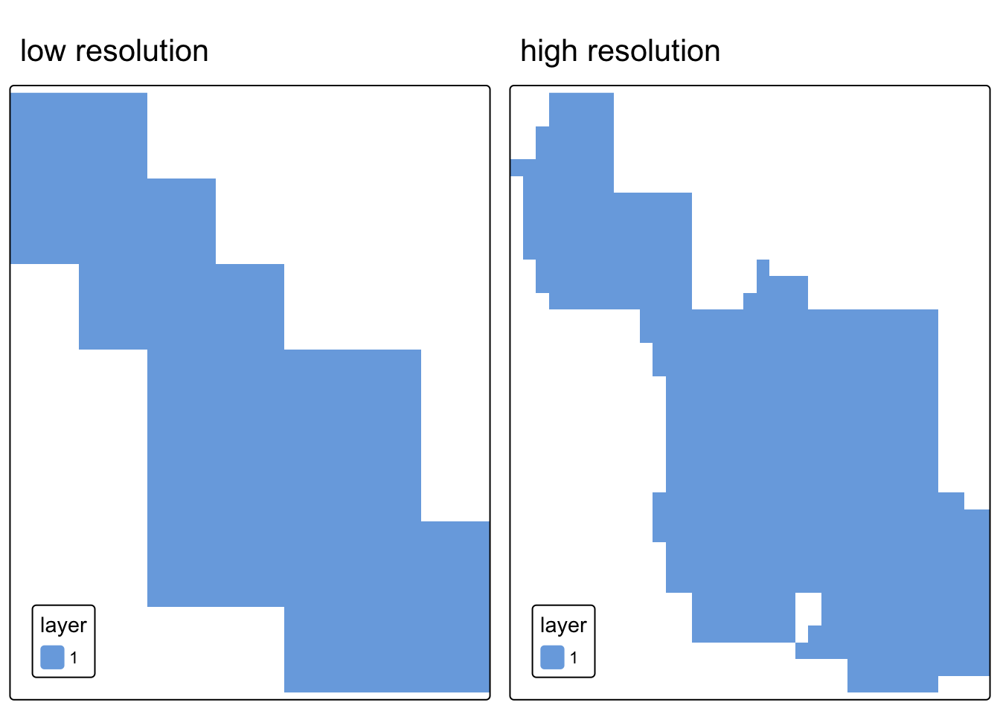
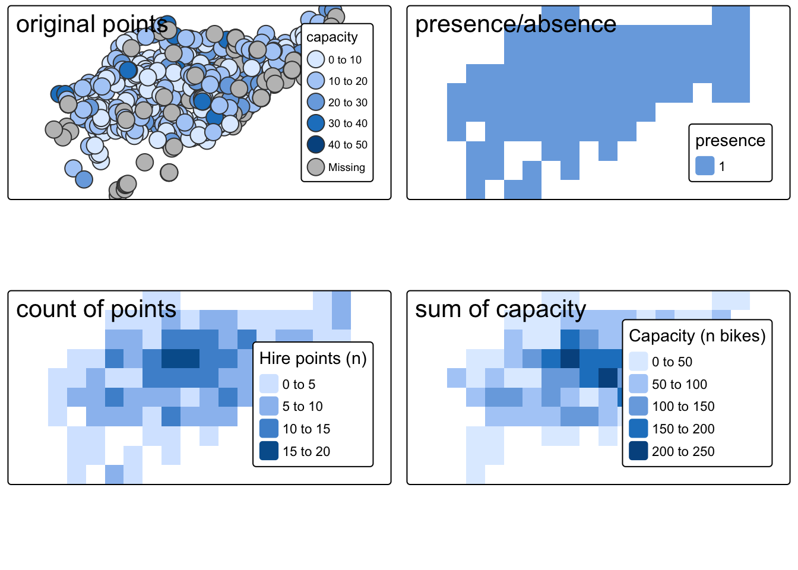

Source Materials
The following materials are modified from Chapter 6 of Geocomputation with R by Robin Lovelace.
In this lab we’ll continue to explore operations that rely on interactions between vector and raster data. Today, we’ll see how to convert raster data into vector data. We’ll also explore creating false color imagery.
1. Set up
First, we’ll load all relevant packages.
library(sf) # vector handling
library(terra) # raster handling
library(tidyverse)
library(tmap) # map making
library(spData) # spatial data
library(spDataLarge) # spatial dataRaster-vector interactions
2. Rasterization
“Rasterization” is the process of representing vector objects as raster objects. You might consider “rasterizing” vector data for the following reasons:
- to use in an analysis that benefits from raster operations (e.g. map algebra)
- standardize with other data used in analysis
- simplify data to reduce computational load
- aggregated data to standard grid
To “rasterize” data using the {terra} package, we use the rasterize() function. The first two arguments define the following:
x: vector object to be “rasterized”y: a ‘template’ raster object defining the extent, resolution, and CRS of the output
Defining the template raster
The geographic resolution of the input raster has a major impact on the results.
- If it is too low (cell size is too large), the result may miss the full geographic variability of the vector data
- If it is too high (cell size is too small), computational times may be excessive
There are no simple rules to follow when deciding an appropriate geographic resolution, which is heavily dependent on the intended use of the results. Often the target resolution is imposed on the user, for example when the output of rasterization needs to be aligned to some other existing raster.
Line and polygon rasterization
The simplest case of rasterization is simply converting the geometries of vector objects to raster objects. In this case, all we are hoping to do is indicate within each raster cell whether or not the vector object is present there.
In most cases, the purpose behind rasterizing vector object is to make it more directly comparable to data that is represented as raster objects. In that case, you want to use the raster object that you would like to compare to as the ‘template’ raster.
Let’s check out how this works by investigating an example from Zion National Park
# load Zion park boundary (vector object to rasterize)
boundary <- read_sf(system.file("vector/zion.gpkg", package = "spDataLarge"))
# load elevation raster to use as template raster object
elevation <- rast(system.file("raster/srtm.tif", package = "spDataLarge"))
# check and transform coordinate reference systems
if(crs(elevation) == crs(boundary)) {
print("Coordinate reference systems match")
} else{
warning("Updating coordinate reference systems to match")
# transform data to match
boundary <- st_transform(boundary, st_crs(elevation))
}Warning: Updating coordinate reference systems to matchRasterization gives different results for polygon versus line vector objects.
- Rasterized polygons: all grid cells intersecting polygon (including cells inside polygon)
- Rasterized lines: grid cells intersecting line (excluding cells potentially enclose by line)
Let’s check out whether or not the park boundary is represented as polygon or line. We can always inspect the geometry type of a vector object using sf::st_geometry_type().
if(sf::st_geometry_type(boundary) == "POLYGON"){
print("polygon data")
} else {
print("not polygon data")
}[1] "polygon data"The park boundary is a polygon, so let’s make a version that just represents the park border using a line geometry.
# update park boundary object name to clarify that it's a polygon
park_polygon <- boundary
# create line version park boundary
park_border <- boundary %>%
sf::st_cast(., "MULTILINESTRING")Code
map1 <- tm_shape(park_polygon) +
tm_polygons() +
tm_title(text = "polygon")
map2 <- tm_shape(park_border) +
tm_lines() +
tm_title(text = "line")
tmap_arrange(map1, map2, nrow = 1)Now we can rasterize both the polygon and line representations of the park boundary.
polygon_raster <- terra::rasterize(park_polygon, elevation)
border_raster <- terra::rasterize(park_border, elevation)Code
map1 <- tm_shape(polygon_raster) +
tm_raster() +
tm_title(text = "rasterized polygon")+
tm_layout(
legend.position = c("left", "bottom")
)
map2 <- tm_shape(border_raster) +
tm_raster() +
tm_title(text = "rasterized line")+
tm_layout(
legend.position = c("left", "bottom")
)
tmap_arrange(map1, map2, nrow = 1)In the case where you are rasterizing without a pre-existing raster you would like to match to, you can create a template raster from scratch.
Impact of resolution
Using a custom template raster is a also a great way to explore how the resolution impacts the results of rasterization!
# create low spatial resolution template raster
template_raster_low <- terra::rast(ext(park_polygon), resolution = 0.05,
crs = st_crs(park_polygon))
# create high spatial resolution template raster
template_raster_high <- terra::rast(ext(park_polygon), resolution = 0.01,
crs = st_crs(park_polygon))
# rasterize to low resolution template raster
polygon_raster_low <- terra::rasterize(park_polygon, template_raster_low)
# rasterize to high resolution template raster
polygon_raster_high <- terra::rasterize(park_polygon, template_raster_high)Code
map1 <- tm_shape(polygon_raster_low) +
tm_raster() +
tm_title(text = "low resolution")+
tm_layout(
legend.position = c("left", "bottom")
)
map2 <- tm_shape(polygon_raster_high) +
tm_raster() +
tm_title(text = "high resolution") +
tm_layout(
legend.position = c("left", "bottom")
)
tmap_arrange(map1, map2, nrow = 1)
Rasterizing point data
When working with point data, we can use the same process as with line and polygon data. However, in some cases we might want to perform more complex operations. Instead of simply indicating whether or not the vector object falls within each grid cell, we might want to count the number of points in each grid cell or even summarize the attributes of points within each cell.
Let’s try an example using data on cycle hire points in London from {spData}.
# define point data
cycle_hire_osm <- spData::cycle_hire_osm
# transform to projected CRS
cycle_hire_osm_projected = sf::st_transform(cycle_hire_osm, "EPSG:27700")
# define raster template
template_raster <- terra::rast(ext(cycle_hire_osm_projected), resolution = 1000,
crs = crs(cycle_hire_osm_projected))In the following code chunk we’ll perform three versions of rasterization to produce the following:
- raster representing the presence/absence of cycle hire points
- raster representing the number of cycle hire points
- raster representing the total capacity of cycle hire points
To represent the presence/absence of cycle hire points, we use the same procedure as before.
ch_raster1 <- terra::rasterize(cycle_hire_osm_projected, template_raster)To represent the number of cycle hire points, we use the fun argument which allows for various summarizing functions. Setting the argument fun = "length" will return a count of the number of points in each cell
ch_raster2 <- rasterize(cycle_hire_osm_projected, template_raster,
fun = "length")To represent the total capacity of cycle hire points, we need to take the sum of each points’ capacity. We can do this by defining which field we would like to aggregate (in this case capacity) and what aggregating function we would like to use (in this case fun = sum).
ch_raster3 <- rasterize(cycle_hire_osm_projected, template_raster,
field = "capacity", fun = sum, na.rm = TRUE)Code
map1 <- tm_shape(cycle_hire_osm_projected) +
tm_symbols(fill = "capacity") +
tm_title(text = "original points")+
tm_layout(meta.margins = c(.2, 0, 0, 0),
legend.position = c("right", "bottom") )
map2 <- tm_shape(ch_raster1) +
tm_raster(col.legend= tm_legend("presence")) +
tm_title(text = "presence/absence")+
tm_layout(meta.margins = c(.2, 0, 0, 0),
legend.position = c("right", "bottom") )
map3 <- tm_shape(ch_raster2) +
tm_raster(col.legend= tm_legend("Hire points (n)")) +
tm_title(text = "count of points")+
tm_layout(meta.margins = c(.2, 0, 0, 0),
legend.position = c("right", "bottom"))
map4 <- tm_shape(ch_raster3) +
tm_raster(col.legend= tm_legend("Capacity (n bikes)")) +
tm_title(text = "sum of capacity")+
tm_layout(meta.margins = c(.2, 0, 0, 0),
legend.position = c("right", "bottom"))
tmap_arrange(map1, map2, map3, map4, nrow = 2)
False color imagery
3. Creating false color images
Source Materials
The following materials are modified from Humboldt State Geospatial Online.
Each band of a multispectral image can be displayed one band at a time as a grey scale image, or in a combination of three bands at a time as a color composite image. Computer screens can display an image in three different channels (red, green, blue) at a time, by using a different primary color for each band. When we combine these three images we get a color composite image.
Natural or true color composite:
- displays red, green, blue RS bands in the red, green, blue channels, respectively
False color composite:
- displays RS bands beyond the visible portion of the spectrum, or
- displays red, green, blue RS bands not necessarily in the red, green, and blue channels
In this example, we’ll work with a remote sensing image of Olinda, Brazil collected by the Landsat-7 Enhanced Thematic Mapper.
| Band | Wavelengths |
|---|---|
| Band 1 | 0.45 - 0.52 micrometers (blue) |
| Band 2 | 0.52 - 0.60 micrometers (green) |
| Band 3 | 0.63 - 0.69 micrometers (red) |
| Band 4 | 0.77 - 0.90 micrometers (near-infrared) |
| Band 5 | 1.55 - 1.75 micrometers (short-wave infrared) |
| Band 7 | 2.08 - 2.35 micrometers (mid-infrared) |
# load Landsat image
L7 <- terra::rast(system.file("tif/L7_ETMs.tif", package = "stars"))To plot various band combinations, we can use tmap::tm_rgb() which allows us to define which band should be displayed in each channel.
We can explore various band combinations, but there are a few common false color composites:
- Near infrared (red channel), red (green channel), green (blue channel):
- Plants reflect near infrared and green light, while absorbing red
- Plants appear deep red and therefore helpful for gauging plant health
- Shortwave infrared (red channel), near infrared (green channel), green (blue channel):
- Water absorbs all three wavelengths, so appears black
- Water and wet soil stand out and therefore helpful for monitoring floods
Code
map1 <- tm_shape(L7) +
tm_rgb(r = 1, g = 2, b = 3) +
tm_title(text = "true color")+
tm_layout(meta.margins = c(.2, 0, 0, 0))
map2 <- tm_shape(L7) +
tm_rgb(r = 4, g = 3, b = 2) +
tm_title(text = "NIR, red, green")+
tm_layout(meta.margins = c(.2, 0, 0, 0))
map3 <- tm_shape(L7) +
tm_rgb(r = 5, g = 4, b = 2) +
tm_title(text = "SWIR, NIR, green")+
tm_layout(meta.margins = c(.2, 0, 0, 0))
tmap_arrange(map1, map2, map3, nrow = 1)